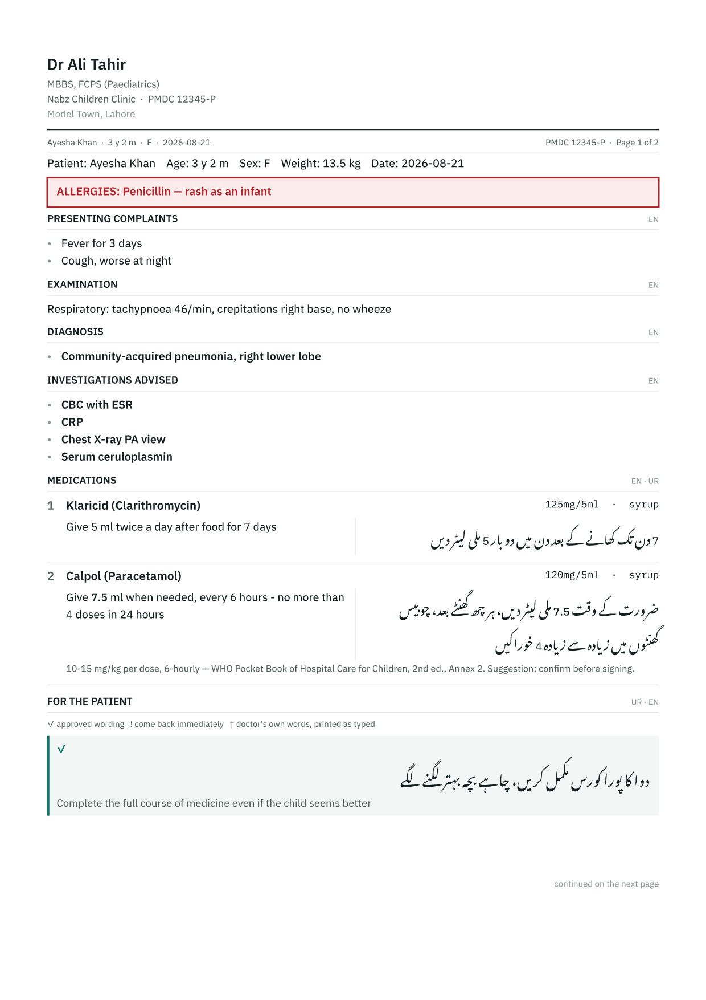

Nabz writes the clinical record in English and the patient's instructions in proper Nastaʿlīq Urdu — composed from structured data, never machine-translated, and printed to survive a cheap mono laser.
Every record stays on the doctor's own device. No account, no cloud, and no server that holds a diagnosis.

The English is the clinical note and the pharmacist's check. The Urdu is what the family takes home. Neither is translated from the other — each language has its own authored word order.
Composed from slots, pluralised per language, with drug names and doses held upright inside right-to-left text. Not “1 tab BD” with the words swapped.
The on-screen sheet and the PDF come from the same layout engine and the same text shaper, at exact millimetre dimensions with fonts embedded. What you approve is what the printer receives.
Doses arrive with their citation attached and are never filled in silently. Growth percentiles are computed once, from WHO or CDC tables, and stored with the reference that produced them.
Two layers, and only one can ever be shared. A receptionist cannot read clinical content because it is not on their machine — enforced by which data exists, not by a permission flag someone can be talked into changing.
Patients, today's queue, paid status, visit fee.
Prescriptions, examinations, growth records, learned vocabulary.
On the clinic's own wifi. Nothing leaves the building.
Working alone? Do the first two steps and stop.
Name, qualifications, registration number, clinic. Choose A4 or Letter, and whether you print on plain paper or a pre-printed pad.
Records live only on this device. The encrypted export is the only way back from a lost phone or a cleared browser. There is no reset, because there is nothing held anywhere to reset from.
Copy nabz-clinic.exe and double-click it. Allow it through
Windows Firewall on Private networks only. It prints its
address and a six-digit pairing code.
Not optional. Browser storage is tied to the address the app was opened from, so if the address moves, the doctor’s device opens an empty app.
Asked once, on first run. A front desk shows only the queue and cannot save a prescription at all — not hidden, not permitted.
Open the station’s http:// address and follow it. On
iPhone this is two steps and the second is easy to miss: install the
profile, then Settings → General → About → Certificate Trust
Settings.
https:// address and enter the pairing code
Add it to the home screen. The queue then syncs both ways on its own, and keeps syncing while you are writing a script.
http:// address a browser silently switches off
encrypted backup, the PIN and offline use — on the one device holding every
clinical record. The certificate is what turns those back on.
One file for the reception PC. The whole app is inside it — nothing to install, no runtime to set up, no database to provision.
Windows 10 and 11, 64-bit. Double-click it and leave the window open; it prints the address a doctor's device should open and a pairing code.
Download for WindowsNode 20+. No database to provision, because there is no database.
npm install
npm run assets # WHO/CDC growth tables + OFL fonts, from their publishers
npm run build
npm start # serves the app only, stores nothing
npm run start:clinic # reception station: also shares the queue on the LAN
npm run build:exe # -> release/nabz-clinic.exe, one self-contained file